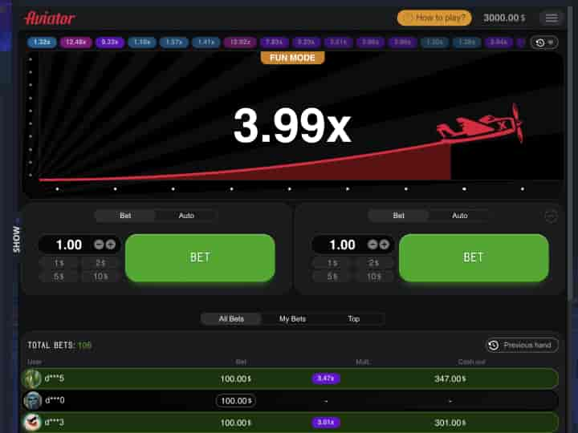

Jogue Aviador Vulkan Vegas online
O jogo Aviator (também conhecido como Crash, Flying Plane ou Lucky Jet) está entre os jogos de azar mais populares de vários cassinos online ao redor do mundo por três anos consecutivos.
A essência do jogo por dinheiro é sacar a aposta no tempo certo enquanto o Aviador está em processo de decolagem. Enquanto o avião decola, o multiplicador da sua aposta também cresce. Em determinado momento, tendo ganho a altura final (coeficiente, multiplicador), o avião voa para longe. Assim, sua aposta, se você não tiver tempo para retirá-la, se esgota. O objetivo de cada jogador no Aviator é sacar fundos no prazo com a maior multiplicação possível (coeficiente).
Depende apenas da sua estratégia como jogar: contentar-se com pequenas probabilidades e vitórias frequentes, ou correr riscos constantemente e esperar ganhar o jackpot com um multiplicador de x200. Seus ganhos dependem da escolha da estratégia de jogo Aviator.
Versão demo gratuita do jogo Aviator in Vulkan Vegas
No Vulkan Vegas você pode jogar não apenas por dinheiro, mas também de graça. Para isso, quase todos os jogos têm uma versão Demo. Em particular, você pode jogar a versão demo do Aviator gratuitamente.
A versão demo gratuita do Aviator ajudará os iniciantes a entender o jogo, ou seja, aqueles que nunca jogaram em um cassino online antes. Você pode ver o avião voar e sentir o jogo. É impossível prever o resultado do jogo, mas você pode, por exemplo, ver o histórico das rodadas. Talvez a última rodada com um multiplicador de x100 tenha sido há muito tempo, então há chances de uma nova rodada com esse multiplicador. Além disso, jogar na versão demo ajudará você a escolher uma ótima estratégia para o jogo.
Para começar a jogar Aviator gratuitamente no cassino online Vulkan Vegas, basta encontrar o jogo na lista de jogos online e clicar no botão Demo. Você receberá um saldo de dinheiro virtual ilimitado e tempo de jogo sem fim. O registro para jogar Aviator gratuitamente é opcional.
Cassino online Vulkan Vegas
A marca de cassino online Vulkan é conhecida há muito tempo pelos entusiastas do jogo de todo o mundo. A história do cassino online Vulkan começou há mais de 30 anos, encantando os jogadores com uma atmosfera clássica, generosas máquinas caça-níqueis e bônus. Não faz muito tempo, a marca Vulkan abriu uma nova página em sua história - o cassino online Vulkan Vegas.
Bônus no Vulkan Vegas
O cassino online Vulkan Vegas é famoso por seus bônus generosos. Entre eles estão os seguintes:
Registro em Vulkan Vegas para jogar Aviator
Para jogar Aviator com dinheiro real no cassino online Vulkan Vegas, registre-se e financie sua conta de jogo. Para iniciar o jogo, siga as instruções simples:
Depósito casino online Vulkan Vegas
No topo da página principal do cassino online Vulkan Vegas, você encontrará todos os métodos de pagamento mais populares e confiáveis:
Fazer depósitos é conveniente, assim como retirar os ganhos!
Pagamento Vulkan Vegas
Os jogadores registrados do Vulkan Vegas têm acesso a pagamentos rápidos. Os fundos do saldo do jogo podem ser transferidos para uma carteira conveniente ou cartões bancários em 12 horas.
Suporte Vulkan Vegas
Se você encontrar alguma dificuldade ao jogar ou, por exemplo, depositar dinheiro em uma conta de jogo ou retirar ganhos, o serviço de suporte 24 horas por dia, 7 dias por semana, terá prazer em responder às suas perguntas.
Jurisdição do casino online Vulkan Vegas
O Vulkan Vegas é apoiado pela Brivio Limited, uma empresa constituída sob as leis da República de Chipre com sede no escritório 102, 12A Lekorpouzier, Limassol, Chipre; número de registro: HE315596; Número de contribuinte do IVA 10315596B. Todos os serviços de jogos são fornecidos sob licença da Invicta Networks (Licença 8048/JAZ2012-009) N.V., registrada no E-Commerce Park Vredenberg, Curaçao, Antilhas Holandesas; número de registro: 123787, que é a empresa-mãe da Brivio Limited.